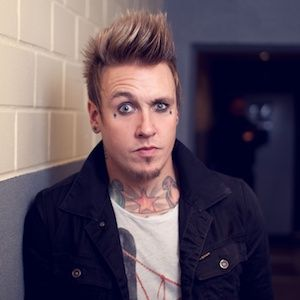

Джейкоби Шэддикс
вокалист группы Papa Roach. Также известен под псевдонимами Коби Дик, Джонни Водка и Дакота Голд. В 2002—2004 работал над сторонним проектом — пост-хардкор/метал-группой Fight the Sky, где использовал псевдоним Джон Доу. Также некоторое время Шэддикс был ведущим шоу Scarred канала MTV.
Джекоби Шэддикс учился в Вакавилльской Средней Школе в городе Вакавилль вместе с Дэйвом Бакнером, где играл на кларнете в школьном оркестре.
С 17 лет Джекоби работал посудомойщиком и охранником госпиталя, чтобы иметь деньги для съёма квартиры на двоих со своим другом. Это продолжалось до 1999 года, когда Джекоби окончательно решил посвятить себя музыке.
19 июля 1997 года женился на своей подруге Келли. Пара имеет троих детей: Маккейль Сиело Шэддикс (род. 24 марта 2002 года), Джаггер Шэддикс (род. 13 сентября 2004 года) и Брикстон Габриэль Шэддикс